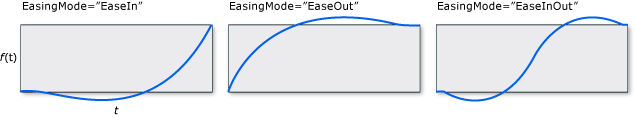
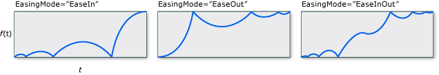
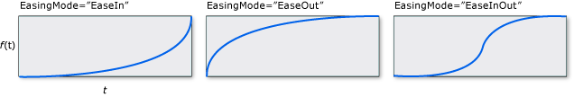
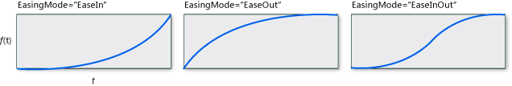
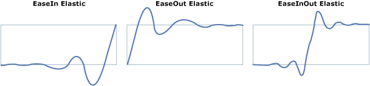
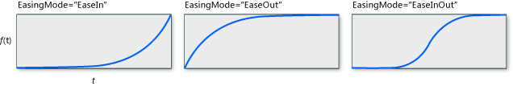
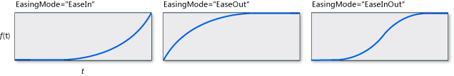
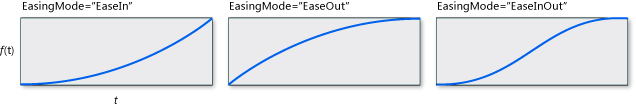
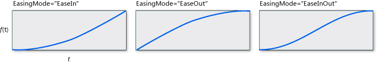

Функции плавности
Функции плавности позволяют применять к анимациям настраиваемые математические формулы. Например, требуется реалистичный отскок объекта или его поведение так, словно он подвешен на пружине. Для приблизительного воспроизведения этих эффектов можно использовать анимацию по ключевым кадрам или даже анимацию From/To/By, но это потребует значительного объема работы, и анимация будет менее точна, чем при использовании математических формул.
Помимо создания собственной функции плавности путем наследования от EasingFunctionBase, можно использовать один из функций плавности, предоставляемых средой выполнения для создания распространенных эффектов.
BackEase: Возвращающую движение анимации немного, прежде чем она начнет выполняться по заданному пути.
BounceEase: Создает эффект отскока.
CircleEase: Создает анимацию, которая ускоряется и замедляется с помощью тригонометрической функции.
CubicEase: Создает анимацию, которая ускоряется и/или замедляется по формуле f(t) = t3.
ElasticEase: Создает анимацию, которая напоминает пружину, и обратно до до полного успокоения.
ExponentialEase: Создает анимацию, которая ускоряется и замедляется с помощью экспоненциальной формулы.
PowerEase: Создает анимацию, которая ускоряется и/или замедляется по формуле f(t) = tp где p равно значению Powerсвойство.
QuadraticEase: Создает анимацию, которая ускоряется и/или замедляется по формуле f(t) = t2.
QuarticEase: Создает анимацию, которая ускоряется и/или замедляется по формуле f(t) = t4.
QuinticEase: Создать анимацию, которая ускоряется и/или замедляется по формуле f(t) = t5.
SineEase: Создает анимацию, которая ускоряется и/или замедляется по формуле синуса.
Для применения функции плавности к анимации, используйте EasingFunction свойства анимации указания функции плавности для применения к анимации. В следующем примере применяется BounceEase функцию для реалистичной анимации DoubleAnimation для создания эффекта отскока.
<Rectangle Name="myRectangle" Width="200" Height="30" Fill="Blue">
<Rectangle.Triggers>
<EventTrigger RoutedEvent="Rectangle.MouseDown">
<BeginStoryboard>
<Storyboard>
<Storyboard x:Name="myStoryboard">
<DoubleAnimation From="30" To="200" Duration="00:00:3"
Storyboard.TargetName="myRectangle"
Storyboard.TargetProperty="Height">
<DoubleAnimation.EasingFunction>
<BounceEase Bounces="2" EasingMode="EaseOut"
Bounciness="2" />
</DoubleAnimation.EasingFunction>
</DoubleAnimation>
</Storyboard>
</Storyboard>
</BeginStoryboard>
</EventTrigger>
</Rectangle.Triggers>
</Rectangle>
В предыдущем примере функция плавности применялась к анимации From/To/By. Эти функции плавности можно применять и к анимации по ключевым кадрам. В следующем примере показано, как использовать ключевые кадры с функциями плавности для создания анимации прямоугольника, который сокращается вверх, замедляется вниз, затем расширяется вниз (как будто падает), а затем подпрыгивает до остановки.
<Rectangle Name="myRectangle" Width="200" Height="200" Fill="Blue">
<Rectangle.Triggers>
<EventTrigger RoutedEvent="Rectangle.MouseDown">
<BeginStoryboard>
<Storyboard>
<DoubleAnimationUsingKeyFrames
Storyboard.TargetProperty="Height"
Storyboard.TargetName="myRectangle">
<!-- This keyframe animates the ellipse up to the crest
where it slows down and stops. -->
<EasingDoubleKeyFrame Value="30" KeyTime="00:00:02">
<EasingDoubleKeyFrame.EasingFunction>
<CubicEase EasingMode="EaseOut"/>
</EasingDoubleKeyFrame.EasingFunction>
</EasingDoubleKeyFrame>
<!-- This keyframe animates the ellipse back down and makes
it bounce. -->
<EasingDoubleKeyFrame Value="200" KeyTime="00:00:06">
<EasingDoubleKeyFrame.EasingFunction>
<BounceEase Bounces="5" EasingMode="EaseOut"/>
</EasingDoubleKeyFrame.EasingFunction>
</EasingDoubleKeyFrame>
</DoubleAnimationUsingKeyFrames>
</Storyboard>
</BeginStoryboard>
</EventTrigger>
</Rectangle.Triggers>
</Rectangle>
Можно использовать EasingMode свойство для изменения, как функция плавности ведет себя, то есть изменить способ интерполяции анимации. Существует три возможных значения, можно задать для EasingMode:
EaseIn: Интерполяция следует математической формуле, связанной с функцией плавности.
EaseOut: Интерполяция следует 100-процентную интерполяцию за вычетом выходного значения формулы, связанной с функцией плавности.
EaseInOut: Интерполяция использует EaseIn для первой половины анимации и EaseOut во второй половине.
На следующих диаграммах показаны различные значения EasingMode где f(x) обозначает ход анимации и t представляет время.










Note
Можно использовать PowerEase создать то же поведение, что CubicEase, QuadraticEase, QuarticEase, и QuinticEase с помощью Power свойство. Например, если вы хотите использовать PowerEase для замены CubicEase, укажите Power значение 3.
Помимо использования функций плавности, входящих в среду выполнения, можно создать собственные функции плавности путем наследования от EasingFunctionBase. В следующем примере показано создание простой пользовательской функции плавности. Можно добавить свою собственную математическую логику для поведение функции плавности путем переопределения EaseInCore метод.
namespace CustomEasingFunction
{
public class CustomSeventhPowerEasingFunction : EasingFunctionBase
{
public CustomSeventhPowerEasingFunction()
: base()
{
}
// Specify your own logic for the easing function by overriding
// the EaseInCore method. Note that this logic applies to the "EaseIn"
// mode of interpolation.
protected override double EaseInCore(double normalizedTime)
{
// applies the formula of time to the seventh power.
return Math.Pow(normalizedTime, 7);
}
// Typical implementation of CreateInstanceCore
protected override Freezable CreateInstanceCore()
{
return new CustomSeventhPowerEasingFunction();
}
}
}
Warning
It looks like the sample you are looking for does not exist.
<Window x:Class="CustomEasingFunction.Window1"
xmlns:CustomEase="clr-namespace:CustomEasingFunction"
xmlns="http://schemas.microsoft.com/winfx/2006/xaml/presentation"
xmlns:x="http://schemas.microsoft.com/winfx/2006/xaml"
Title="Window1" Height="500" Width="300">
<StackPanel>
<TextBlock Margin="10" TextWrapping="Wrap">Click on the rectangle to start the animation</TextBlock>
<StackPanel x:Name="LayoutRoot" Background="White">
<Rectangle Name="myRectangle" Width="200" Height="30" Fill="Blue">
<Rectangle.Triggers>
<EventTrigger RoutedEvent="Rectangle.MouseDown">
<BeginStoryboard>
<Storyboard>
<DoubleAnimation From="30" To="300" Duration="00:00:3"
Storyboard.TargetName="myRectangle"
Storyboard.TargetProperty="Height">
<DoubleAnimation.EasingFunction>
<!-- You get the EasingMode property for free on your custom
easing function.-->
<CustomEase:CustomSeventhPowerEasingFunction EasingMode="EaseIn"/>
</DoubleAnimation.EasingFunction>
</DoubleAnimation>
</Storyboard>
</BeginStoryboard>
</EventTrigger>
</Rectangle.Triggers>
</Rectangle>
</StackPanel>
</StackPanel>
</Window>